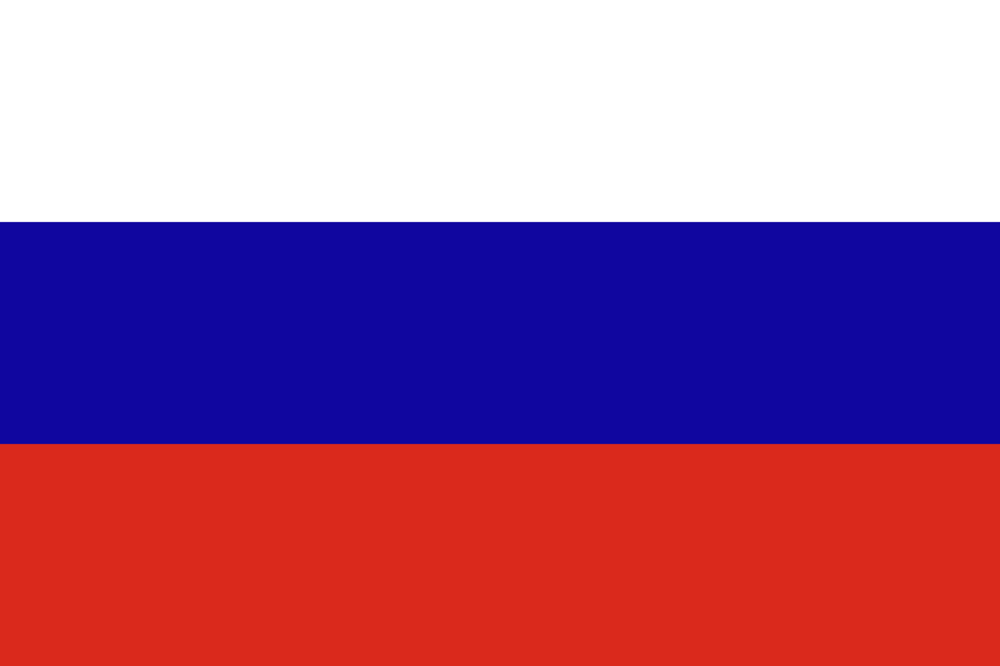

Diese interaktive Karte zeigt die bekannten Standorte interkontinentaler Flugkörper (ICBM) von Russland, den USA und China.
Die Daten basieren auf offenen Quellen und wissenschaftlichen Analysen.

Auf dieser Seite wird eine interaktive Karte dargestellt. Für den Hintergrund der Karte werden externe Kartenkacheln geladen.
Diese Inhalte stammen von OpenStreetMap und CARTO.
Dabei können personenbezogene Daten wie Ihre IP-Adresse an externe Server übertragen werden.
Weitere Informationen:
OpenStreetMap
CartoDB